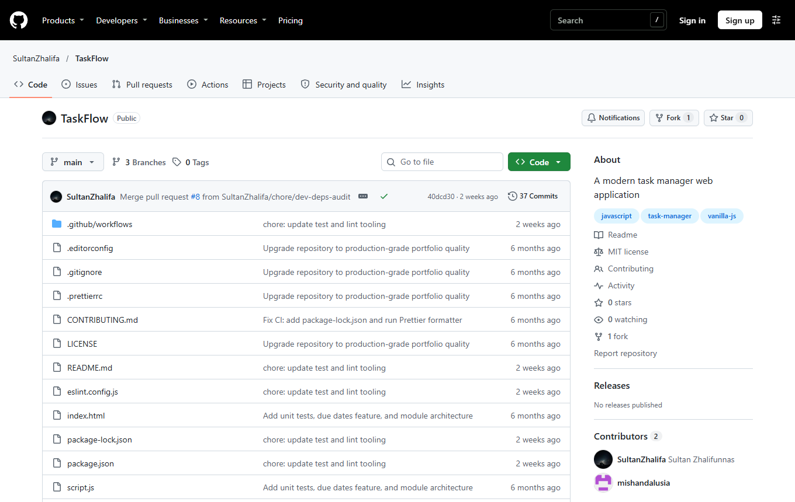
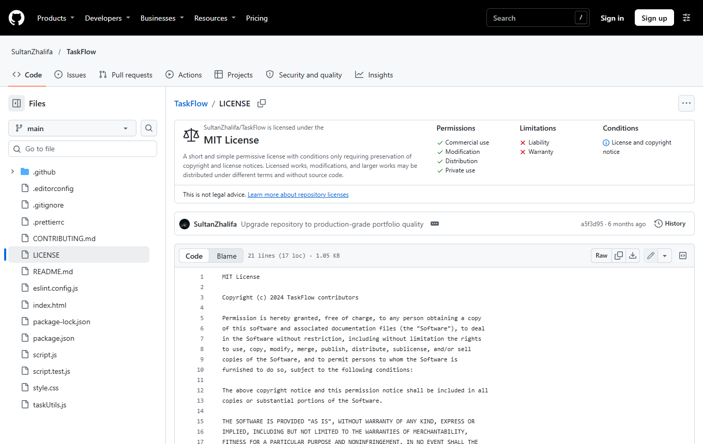
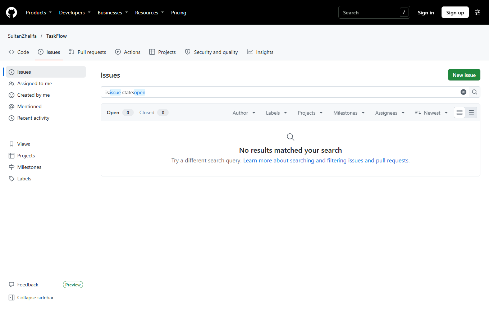
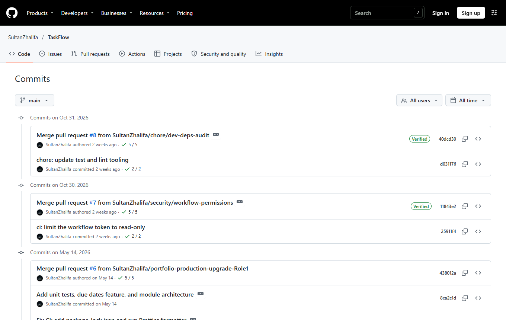
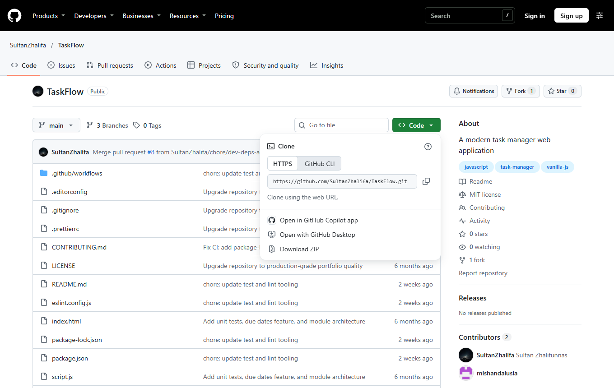

第二章：第一次认识 GitHub#
本章约 45 分钟。你需要一台能上网的电脑和一个浏览器，不安装任何软件。
学习目标#
- 说清 GitHub 是什么，以及 Repository、README、LICENSE、Issues、Commits 分别是什么；
- 会看一个仓库的"名片"，判断它用什么语言、能不能在自己电脑上跑；
- 会用几个简单信号判断项目是否适合自己的水平；
- 学会两种把项目弄到本机的方法：Download ZIP 和 Git Clone；
- 知道为什么要认准 LICENSE。
开始前需要#
- 浏览器（Edge/Chrome 都行）；
- 不需要注册 GitHub 账号（下载公开项目不需要登录）。
2.1 GitHub 是什么（一句话版）#
GitHub 是全球最大的开源代码托管网站。你可以把它理解成"代码的网盘 + 作品展览馆 + 协作办公室"：开发者把项目源码放上去，任何人都可以看、下载，还可以在许可证允许的前提下修改和再发布。
本课程使用的真实项目是：
TaskFlow —— 一个纯网页的任务管理器（待办清单） 地址：https://github.com/SultanZhalifa/TaskFlow 用浏览器打开它，你会看到下面这个页面：

2.2 仓库主页怎么读：五个必看区域#
打开一个陌生仓库，先别急着看代码。按固定顺序扫五个地方：
① README（仓库首页下方的说明书）#
仓库主页往下滚，自动显示 README.md 的内容——它是项目的"自我介绍"。TaskFlow 的 README 告诉我们：
- 它是干什么的：
A client-side task manager built with vanilla HTML, CSS, and JavaScript（用原生 HTML/CSS/JS 写的任务管理器，无框架、无构建步骤）； - 有什么功能：添加/编辑/完成任务、优先级、截止日期、拖拽排序、搜索、深色模式、数据导出；
- 怎么跑起来：README 说 "open
index.htmlin any modern browser"（直接打开 index.html）——注意：这个说法到第三章会发现与实际不符，那是一次很好的工程学习机会； - 作者自己列的 "Potential improvements"（可以改进的方向）——这等于官方告诉你哪里适合做二次开发。
方法结论：读 README 时只关心三个问题——它干什么？用什么写的？怎么跑起来？其余先跳过。
② 文件列表和语言条（页面中上部）#
文件列表显示了项目的全部源码文件。点"语言条"（About 附近显示 JavaScript/CSS/HTML 占比）可以快速判断技术栈。TaskFlow 是：
JavaScript 59.5% CSS 33.9% HTML 6.6%
全是我们认识的三种网页技术，没有 Python、Java、C++，意味着普通笔记本 + 浏览器就够，不需要装编译器、数据库或服务器软件。
③ LICENSE（许可证）#
文件列表里有 LICENSE，右侧 About 区写着 "MIT license"。点开它：

LICENSE 决定你能对这份代码做什么，比代码本身还先看。MIT 是最宽松的开源许可之一：允许你复制、修改、再发布，条件是保留原作者的版权声明。如果仓库没有 LICENSE，不代表"随便用"——恰恰相反，默认版权归作者，你不应随意复制发布。
本课程「下载中心」的 taskflow-original.zip 里保留了 LICENSE 原件，详见 项目来源与许可证.md。
④ Issues（问题讨论区）#
顶部标签栏的 "Issues" 是用户和作者讨论问题、提需求的地方：

看 Issues 的意义不是刷帖子，而是判断：这个项目有人用吗？作者回应吗？有没有未解决的严重问题？ TaskFlow 是个小型项目，issue 区比较安静——对小项目这很正常，不一定是坏事。
⑤ Commits（提交历史）#
点仓库主页文件列表上方的 "Commits"（或右边的提交计数）能看到项目的修改历史：

每一行是一次改动（叫 commit）。注意看两点：
- 最近一次提交的时间：项目还在维护吗？TaskFlow 最近有更新（新版功能、Dark mode 等都是后来加的）；
- 每条 commit 的说明文字：能看出项目的演进，比如 "Merge feature/dark-mode" 说明深色模式是后来通过分支合并加进去的。
2.3 判断"这个项目适不适合我"的速查表#
拿到任何 GitHub 仓库，用这张表打勾：
| 检查项 | 合格信号 | 警惕信号 |
|---|---|---|
| README 说得清用途 | 有截图、有功能列表、有运行方法 | 只有一句话或完全空白 |
| 技术栈 | 你认识的语言为主 | 大量你没听过且不想碰的框架/工具链 |
| 运行依赖 | 浏览器/普通软件即可 | 需要数据库、GPU、云服务、付费 API Key |
| LICENSE | MIT / Apache-2.0 / BSD 等明确许可 | 没有 LICENSE，或写着仅供学习不可修改 |
| 规模 | 核心源码你能数得过来（几个到几十个文件） | 几千个文件、多层嵌套目录 |
| 活跃度 | 近一两年有提交，issue 有回应 | 多年不动 + 大量未处理 bug |
| 安全性 | 正常用途工具 | 名字带 "free premium hack""cheat""crack" 之类，README 只有神秘外链 |
TaskFlow 全绿：功能明确、纯网页技术、浏览器即跑、MIT 许可、核心源码四个文件、有明确的改进空间（任务备注）。这就是我们选它的理由。
安全提醒：不要在 GitHub 上随便下载运行来路不明的可执行文件（.exe/.bat/.ps1）。本项目的代码是网页源码，本身透明可读——这也是选网页项目入门的原因之一。
2.4 把代码拿到本机：方法 A——Download ZIP（不需要装 Git）#
这是最适合零基础的路径，和下载网盘文件一样：
-
在仓库主页，点击绿色的
<> Code按钮； -
弹出菜单里点
Download ZIP：
Download ZIP -
浏览器会下载一个
TaskFlow-main.zip（main是分支名）； -
右键解压，建议解压到一个路径简单、没有特殊字符的文件夹，比如
D:\study\TaskFlow-main\； -
解压后能看到
index.html、script.js等文件，说明拿到了完整源码。
但 ZIP 下载有一个坑要知道：它下载的是"当前最新版"。开源项目会更新，你下载的和我教程里的可能不是同一个版本。解决办法是认准固定版本：
- 每条 commit 都有一串编号（SHA）。本课程固定使用：
40dcd30025817355c7dd96b56702820779582ebf（2026-10-31，main 分支） - 固定版本的 ZIP 地址（把 SHA 拼进 URL）： https://github.com/SultanZhalifa/TaskFlow/archive/40dcd30025817355c7dd96b56702820779582ebf.zip
- 本课程「下载中心」已经打包好这个固定版本（
taskflow-original.zip，解压得到TaskFlow-40dcd30/），你可以直接用它，跳过在 GitHub 下载——保证和教程逐字一致。
2.5 把代码拿到本机：方法 B——Git Clone（可选进阶）#
Git 是一个版本管理工具（谁改了什么、什么时候改的，全能查）。装了 Git 之后，在文件夹里打开终端执行：
git clone https://github.com/SultanZhalifa/TaskFlow.git
cd TaskFlow
git checkout 40dcd30025817355c7dd96b56702820779582ebf
- 第一句：把仓库连同全部历史下载下来（ZIP 只有当前文件，没有历史）；
- 第三句：切换到本课程固定的那个版本，保证和教程一致。
优势：能看到完整提交历史（配合 2.2 ⑤ 学到的东西验证项目的演进）；将来想给开源项目贡献代码，必须走这条路。 代价：要装 Git、要会一点命令行。本课程主线不依赖它，可以全部学完后回来补。
注意：git clone 需要国内网络能访问 github.com。如果下载 ZIP 都困难（网络不稳定），本课程「下载中心」的 taskflow-original.zip 已经是完整源码，直接进入第三章。
常见失败及处理#
| 现象 | 原因与处理 |
|---|---|
| github.com 打不开或极慢 | 网络问题。先用「下载中心」的 taskflow-original.zip 继续，网络好时再来体验 |
| 解压后是一层套一层的文件夹 | 正常，ZIP 会多套一层目录，往里再点一层就能看到 index.html |
| 文件名乱码 | 解压软件问题，换 Windows 自带解压（右键 → 全部提取）或 7-Zip |
| 找不到 Download ZIP 按钮 | 确认在仓库主页（github.com/用户名/仓库名 这一层），不是在某个文件页面 |
本章 AI 提问示例#
- 「我看到 GitHub 仓库里有
package.json和package-lock.json，但 README 说这个项目只需要浏览器运行。这两个文件是干什么的？不装 Node 能不能跑？」 - 「MIT License 允许我修改后公开发布吗？我需要保留什么？」（拿不准时也可以让 AI 把 LICENSE 原文逐句翻译给你——把文件内容贴给它）
- 「这个仓库（贴 README 或截图描述）适合一个只学过 C 语言、想练手的大二学生做二次开发吗？帮我按"技术栈/依赖/规模/改进空间"四项评估。」
- 不看笔记能说出 Repository、README、LICENSE、Issues、Commits 各是什么；
- 能说出判断项目是否适合自己的至少 5 个检查项；
- 知道 ZIP 下载和 git clone 的区别（有/无提交历史）；
- 知道本课程固定的版本号是什么、为什么需要固定版本。
打开任意一个陌生 GitHub 仓库（可以自己找一个试试），3 分钟内说出：它干什么、什么语言、怎么跑、LICENSE 是什么、适不适合你。五个问题答得上来就过关。
上一章：第一章 ｜ 下一章：第三章：让陌生项目第一次运行起来